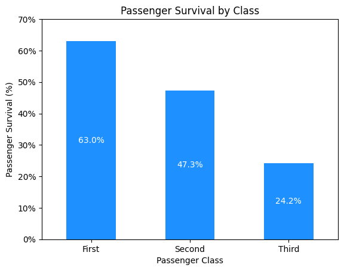
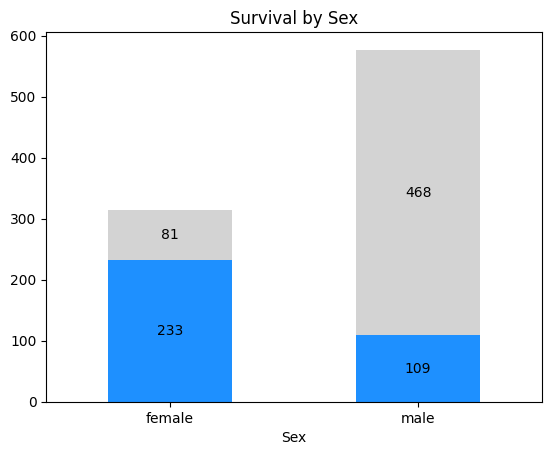
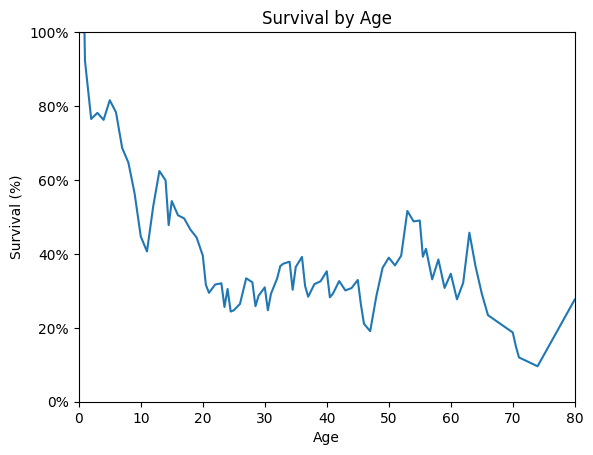
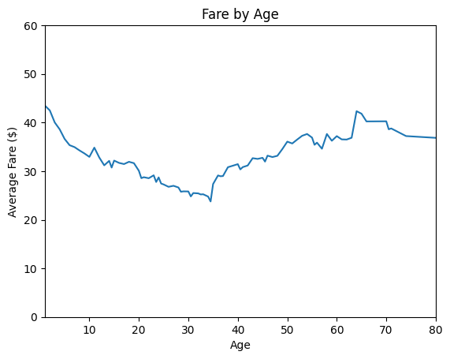
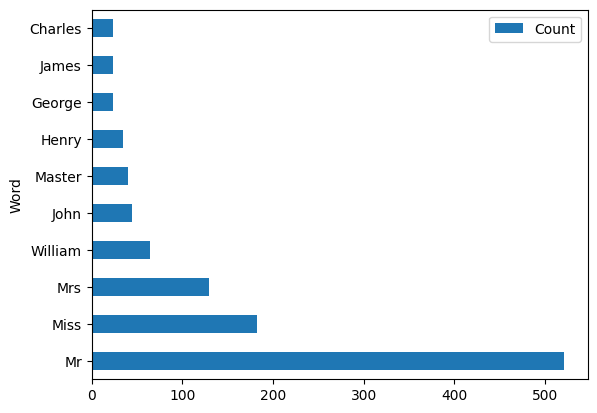
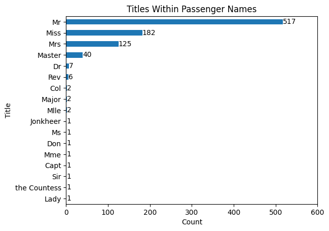
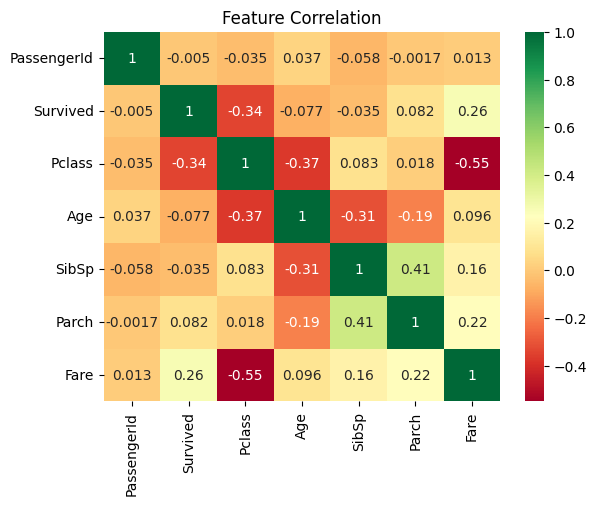
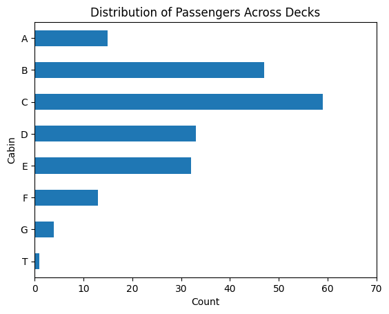
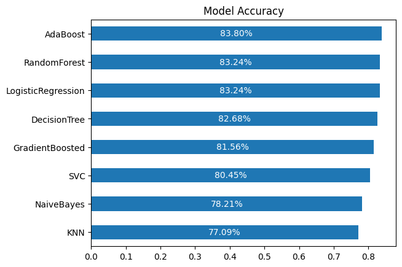
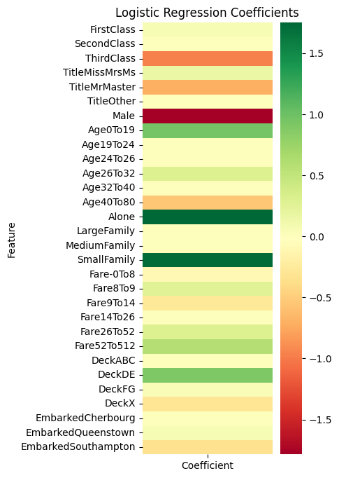

# Import required modules
import pandas as pd
import numpy as np
import matplotlib.pyplot as plt
from matplotlib.axes import Axes
import seaborn as snsTitanic
To most, the Titanic may evokes imagery of a grand ship, a newspaper headline, or maybe the iconic picture of Leo & Kate on the bow of the ship. To data scientists, the Titanic often reminds us of our first dataset, a real dataset, requiring vast amounts of cleaning, preprocessing, transformation, and hyperparameter tuning.
Nevertheless, the Titanic dataset is a great place to start with data science projects. It is a great place to start, covering a great variety of topics.
Setup
Download Data
Define Workflow
Before we start, let’s define the scope of our workflow. I’m taking the steps from the framework CRISP-DM (Cross-Industry Standard Process for Data Mining). Data Science PM has a useful overview of this framework on their website.
- Business Understanding
- Data Understanding
- Data Preparation
- Modeling
- Evaluation
- Deployment
1. Business Understanding
Business Objectives
Typically, we’ll want to thoroughly understand the business side of things before embarking on an analysis. This involves a lot of discussion with stakeholders–the ones who feel the most impact from the problem at hand.
Perhaps we need an understanding of what went wrong on the Titanic in order to prevent future disasters. Or, maybe we want to analyze the most impactful features of passengers in their survival so as to determine the effect of society norms in the early 20th century on a passenger surviving any kind of disaster.
Regardless of the business case, we’re looking to understand survival of Titanic passengers and create a model to predict which passengers will survive.
Assess the Situation
Here is where we would need to evaluate what resources we have available. If our model was computationally intensive, what resources does our company have with cloud computing? Are there other metadata or supplemental datasets that may be useful here?
For our purpose, we simply have the dataset provided to us by Kaggle. As we get further into the analysis, we can evaluate risks/contingencies based on the cleanliness of the data.
Determine the Goals
In short, what does success look like?
Personally, I would love to see a model that can predict (with excellent accuracy) which passengers will survive the Titanic. I anticipate that the bare features alone won’t cut it, so a successful model will likely have well-engineered features that make use of the raw data. Finally, a successful project would be one that considers multiple models, using cross-validation, and implements the most successful one.
Summarizing these goals, we want to:
- Create a machine learning model to predict which passengers survive
- Have excellent performance (to be clarified later)
- Develop well-engineered, meaningful features
- Utilize cross-validation to select the best-performing model
Formulate a Project Plan
What kind of technologies do we want to use, and how will we implement them?
We’ll need to revisit this as we get further understanding of the data, but initially, we could make use of:
- Logistic Regression
- Naive-Bayes
- k-Nearest Neighbors
- Decision Tree
- Random Forest
- Gradient-Boosted Trees
- Ada Boost
- Support Vector Machines
Much of these are quickly available in the Scikit-Learn library. In addition, this library also provides tools for:
- Train-Test splits
- K-fold cross-validation
- Stratified K-Fold cross-validation
- Grid search CV
- Accuracy metrics
2. Data Understanding
This stage is more commonly referred to as EDA, or exploratory data analysis. We want to import our data and understand its structure, what problems we need to fix, and any other factors that may affect our workflow.
Load Data
df = pd.read_csv('data/Titanic-Dataset.csv')
print('Loaded data into variable `df`')Loaded data into variable `df`Describe our Data
Here, we want to understand some high-level characteristics of our data, namely:
- Data preview (i.e., the head)
- Data types
- Descriptive statistics
- Null value distribution
# Display first 10 rows
df.head(10)| PassengerId | Survived | Pclass | Name | Sex | Age | SibSp | Parch | Ticket | Fare | Cabin | Embarked | |
|---|---|---|---|---|---|---|---|---|---|---|---|---|
| 0 | 1 | 0 | 3 | Braund, Mr. Owen Harris | male | 22.0 | 1 | 0 | A/5 21171 | 7.2500 | NaN | S |
| 1 | 2 | 1 | 1 | Cumings, Mrs. John Bradley (Florence Briggs Th... | female | 38.0 | 1 | 0 | PC 17599 | 71.2833 | C85 | C |
| 2 | 3 | 1 | 3 | Heikkinen, Miss. Laina | female | 26.0 | 0 | 0 | STON/O2. 3101282 | 7.9250 | NaN | S |
| 3 | 4 | 1 | 1 | Futrelle, Mrs. Jacques Heath (Lily May Peel) | female | 35.0 | 1 | 0 | 113803 | 53.1000 | C123 | S |
| 4 | 5 | 0 | 3 | Allen, Mr. William Henry | male | 35.0 | 0 | 0 | 373450 | 8.0500 | NaN | S |
| 5 | 6 | 0 | 3 | Moran, Mr. James | male | NaN | 0 | 0 | 330877 | 8.4583 | NaN | Q |
| 6 | 7 | 0 | 1 | McCarthy, Mr. Timothy J | male | 54.0 | 0 | 0 | 17463 | 51.8625 | E46 | S |
| 7 | 8 | 0 | 3 | Palsson, Master. Gosta Leonard | male | 2.0 | 3 | 1 | 349909 | 21.0750 | NaN | S |
| 8 | 9 | 1 | 3 | Johnson, Mrs. Oscar W (Elisabeth Vilhelmina Berg) | female | 27.0 | 0 | 2 | 347742 | 11.1333 | NaN | S |
| 9 | 10 | 1 | 2 | Nasser, Mrs. Nicholas (Adele Achem) | female | 14.0 | 1 | 0 | 237736 | 30.0708 | NaN | C |
Notes:
PassengerIdlooks like a simple incrementing ID; this should be set as the index.Survivedis our target, a one-hot variable with 1 = “Survived”PClassseems to be a numeric value indicating first, second, or third class rooms on the ship.Namedoesn’t just include first/last name, it also includes title. This may be useful for an engineered feature.Sexseems to be only male/female – this should be converted to a one-hot variable.Age- I see one NaN value here. I also notice it got represented as a float – is there a passenger whose age isn’t a whole integer?SibSp- Not immediately clear, but this one represents the number of siblings or spouses on the Titanic. I.e., other people in their group of the same age.Parch- LikeSibSp, this isn’t immediately clear, but the documentation says this represents the number of parents/children in their group. Both this column andSibSpmay be useful to quantify the total people in the party’s group.Ticket- Some of these are integers (ticket number), but some also have information like ‘A/5’, ‘PC’, ‘STON/O2’. Will need to dig further to understand this field.Fare- How much was paid for the ticket. Do higher-paying customers have better chance of survival?Cabin- The cabin number. May be useful ifPclassisn’t available.Embarked- S = Southampton, C = Cherbourg, Q = Queenstown. Note that the order here is not arbitrary: This is the order of ports that the Titanic visited.
# Display data types
display(df.dtypes.value_counts().to_frame('# Columns'))
display(df.dtypes.to_frame(name='Type'))| # Columns | |
|---|---|
| int64 | 5 |
| object | 5 |
| float64 | 2 |
| Type | |
|---|---|
| PassengerId | int64 |
| Survived | int64 |
| Pclass | int64 |
| Name | object |
| Sex | object |
| Age | float64 |
| SibSp | int64 |
| Parch | int64 |
| Ticket | object |
| Fare | float64 |
| Cabin | object |
| Embarked | object |
Notes:
As mentioned above, it’s interesting that the
Agefield came in as a float. It may make more sense to convert this to an integer, unless that partial year gives us some kind of information.Also, while it may be tempting to get rid of the 5 string fields, we can’t disregard this yet – we don’t have a ton of information to work with, so we’ll want to extract as much information as possible.
# Describe the data
df.describe().round(2)| PassengerId | Survived | Pclass | Age | SibSp | Parch | Fare | |
|---|---|---|---|---|---|---|---|
| count | 891.00 | 891.00 | 891.00 | 714.00 | 891.00 | 891.00 | 891.00 |
| mean | 446.00 | 0.38 | 2.31 | 29.70 | 0.52 | 0.38 | 32.20 |
| std | 257.35 | 0.49 | 0.84 | 14.53 | 1.10 | 0.81 | 49.69 |
| min | 1.00 | 0.00 | 1.00 | 0.42 | 0.00 | 0.00 | 0.00 |
| 25% | 223.50 | 0.00 | 2.00 | 20.12 | 0.00 | 0.00 | 7.91 |
| 50% | 446.00 | 0.00 | 3.00 | 28.00 | 0.00 | 0.00 | 14.45 |
| 75% | 668.50 | 1.00 | 3.00 | 38.00 | 1.00 | 0.00 | 31.00 |
| max | 891.00 | 1.00 | 3.00 | 80.00 | 8.00 | 6.00 | 512.33 |
Notes:
PassengerId- Irrelevant, as this is just an index.Survived- The min/max don’t tell us much, but the mean is useful – 38% of passengers survived, so around 1 in 3.Pclass- This is an ordinal field, not numeric, but it does tell us that the average passenger was between class 2 and 3.Age- There is a variety of ages on the Titanic, with the typical passenger being about 28-29 years of age, the youngest was 0.42 (5 months) and the eldest was 80 years old. Most passengers (25-75 percentile) were between 20-38 years old.SibSp- Most passengers (>50%) didn’t have any siblings or spouses. Even the 75% percentile was just 1 other person of their age. The largest group was 8 siblings/spouses (almost certainly 8 siblings).Parch- The vast majority (>75%) didn’t have any parents or children aboard, but one group had 6 parents/children.Fare- On average, passengers paid $32.20 with a wide standard deviation of $49.69. Most passengers paid between $8-31, with the wealthiest passenger paying a whopping $512.33 for their fare.
# Understand the null distribution
null_distribution = pd.DataFrame({
'Null Count': df.isna().sum().map(lambda n: '' if n == 0 else f'{n:,}'),
'% Null': df.isna().mean().map(lambda p: '' if p == 0 else f'{p:.2%}')
})
null_distribution = null_distribution.loc[null_distribution.iloc[:,0] != '']
null_distribution.T| Age | Cabin | Embarked | |
|---|---|---|---|
| Null Count | 177 | 687 | 2 |
| % Null | 19.87% | 77.10% | 0.22% |
Notes:
Most fields don’t have any null values, which is helpful. The most problematic field will be Cabin, but from looking at the top 10 rows, it doesn’t seem like this will be useful. We may just drop this field all together.
Ageis an interesting one: there is a significant amount of nulls here, but it may be quite a useful field. We could look at doing a quick predictive model based onName,Fare,Embarked,SibSp, andParch. Or, if we want something quick, we could do a simple median-value or mean-value imputation.
Embarkedwill probably require a quick manual fix here, since it’s only 2 records.
Explore the Data
Now for the fun part of EDA–the visuals! Let’s try to visualize what our data looks like. Each cell will be looking to answer a preliminary question or one raised in the data description step prior to this.
def add_bar_labels(
ax: Axes,
fmt: str,
label_type='center',
color='white'
) -> None:
for container in ax.containers:
ax.bar_label(container, label_type=label_type, fmt=fmt, color=color)
return# How did class play a role in survival?
df_class = df.groupby('Pclass', as_index=False)[['Survived']].mean()
ax = df_class.plot(
kind='bar',
x='Pclass',
y='Survived',
xlabel='Passenger Class',
ylabel='Passenger Survival (%)',
rot=0,
color='dodgerblue',
legend=False,
title='Passenger Survival by Class'
)
# X Labels
ax.set_xticks(range(3), ['First', 'Second', 'Third'])
# Y Labels
yticks = ax.get_yticks()
ytick_labels = map('{:.0%}'.format, yticks)
ax.set_yticks(yticks, ytick_labels)
add_bar_labels(ax, fmt='{:.1%}')
# ax.set_title('Passenger Survival by Class', size=14, pad=12)
plt.show()
Notes:
Unsurprisingly, first-class passengers has the best chance of surviving, followed by second, then third class.
# What was the distribution of sex on the Titanic? How did this affect surival?
# Create pivot-table by sex
df_sex = df.groupby(['Sex', 'Survived'], as_index=False)[['PassengerId']].count()
df_sex = df_sex.pivot(index='Sex', columns='Survived', values='PassengerId')
df_sex.rename(inplace=True, columns=lambda s: ['No', 'Yes'][s])
df_sex.sort_index(inplace=True, axis=1, ascending=False) # Show 'Yes' first
# Plot data
ax = df_sex.plot(
kind='bar',
stacked=True,
color=['dodgerblue', 'lightgray'],
legend=False,
title='Survival by Sex',
rot=0,
)
add_bar_labels(ax, fmt='{:,.0f}', color='black')
plt.show()
# How does Age play an impact in survival?
df_age = df.groupby('Age', as_index=False)[['Survived']].mean()
df_age['Survived'] = df_age['Survived'].ewm(alpha=0.2).mean()
ax = df_age.plot(
kind='line',
x='Age',
y='Survived',
legend=False,
title='Survival by Age',
xlabel='Age',
ylabel='Survival (%)',
xlim=(0, 80),
ylim=(0, 1),
)
yticks = ax.get_yticks()
ytick_labels = map('{:.0%}'.format, yticks)
ax.set_yticks(yticks, ytick_labels)
plt.show()
# Did older passengers pay higher fares?
df_age_fare = df.groupby('Age', as_index=False)[['Fare']].mean()
df_age_fare['Fare'] = df_age_fare['Fare'].ewm(alpha=0.05).mean()
ax = df_age_fare.plot(
kind='line',
x='Age',
y='Fare',
legend=False,
title='Fare by Age',
xlabel='Age',
ylabel='Average Fare ($)',
xlim=(1, 80),
ylim=(0, 60),
)
plt.show()
# How does Fare play an impact in survival?
df_fare = df.groupby('Fare', as_index=False)[['Survived']].mean()
df_fare['Survived'] = df_fare['Survived'].ewm(alpha=0.02).mean()
ax = df_fare.plot(
kind='line',
x='Fare',
y='Survived',
legend=False,
title='Survival by fare',
xlabel='Fare',
ylabel='Survival (%)',
xlim=(0, 500),
ylim=(0, 1),
)
yticks = ax.get_yticks()
ytick_labels = map('{:.0%}'.format, yticks)
ax.set_yticks(yticks, ytick_labels)
plt.show()
Notes:
It seems that generally, higher fares meant higher chance of survival, but there was a small dip around $30-50 fare, where passnegers that paid around $20-30 had a slightly higher chance of survival.
# What are the most common words within "Name"?
is_alnum_or_space = lambda s: s.isalpha() or s == ' '
name_words = str.split(' '.join(
df['Name'].map(lambda name: ''.join(filter(is_alnum_or_space, name)))
))
word_counts = pd.Series(name_words).value_counts().reset_index()
word_counts.columns = ['Word', 'Count']
ax = word_counts.head(10).plot(
kind='barh',
x='Word',
y='Count',
)
plt.show()
Note:
It doesn’t seem like this extracts much information, since common names like “William”, “John”, and “Henry” are captured as common words in names. But, we may be able to extract the person’s title from the structure of the name: nearly every name is structured as “LastName, Title. FirstName (Alt Name)”
# What are the most common titles?
def extract_name_title(name: str) -> str:
'''
Get a person's title out of their name.
'''
title_and_firstname = name.split(', ')[1]
title = title_and_firstname.split('. ')[0]
return title
name_titles = df['Name'].map(extract_name_title).value_counts().to_frame()
name_titles = name_titles.reset_index()
name_titles.columns = ['Title', 'Count']
name_titles = name_titles.sort_values(by='Count', ascending=True)
ax = name_titles.plot(
kind='barh',
x='Title',
y='Count',
xlim=(0, 600),
title='Titles Within Passenger Names',
legend=False,
xlabel='Count',
ylabel='Title',
)
add_bar_labels(ax, fmt='{:.0f}', label_type='edge', color='black')
plt.show()
# How strong is the correlation between variables?
ax = sns.heatmap(df.corr(numeric_only=True), cmap='RdYlGn', annot=True)
ax.set_title('Feature Correlation')
plt.show()
# What were the most common cabins?
df \
.loc[~df.Cabin.isna(), 'Cabin'] \
.map(lambda s: s[0]) \
.value_counts() \
.sort_index(ascending=False) \
.reset_index() \
.plot(
kind='barh',
x='Cabin',
y='count',
xlim=(0, 70),
title='Distribution of Passengers Across Decks',
legend=False,
xlabel='Count',
ylabel='Cabin',
)
add_bar_labels(ax, fmt='{:.0f}', label_type='edge', color='black')
plt.show()
3. Data Preparation
Data scientists love to remind each other that roughly 80% of the project involves data preparation. It’s a good rule of thumb, but ultimately is meant to remind us that we should take extra time to synthesize our data.
Some steps we will take:
- Clean Data
- Transform Data
Typically, the Transform step is done in 4 parts: Select, Construct, Integrate, and Format. For our purposes, we won’t need to integrate with any additional sources, other than some minor details for the Embarked field. Data formatting is covered pretty thoroughly in the Cleaning stage, so the main step left is the selection of useful features and construction by means of transformation/encoding.
Clean Data
Plan
Most of our data is pretty clean for what we need. There are just some null values that need filling:
| Column | Strategy |
|---|---|
Age |
Median-Value Fill |
Cabin |
Default-Value Fill |
Embarked |
Background Research (2 values) |
df_clean = df.copy() # Preserve raw dataAge: Median-Value Fill
To balance simplicity of analysis with as beneficial of an imputation as possible, we can look to use the median age by Sex and Pclass to fill the null values of Age.
def median_value_fill(
df: pd.DataFrame,
column: str,
group_by: str | list[str],
) -> pd.DataFrame:
median_column = f'Median{column}'
median_values = df \
.groupby(group_by)[column].median() \
.reset_index() \
.rename(columns={column: median_column})
df = df.merge(median_values)
df[column] = df[column].fillna(df[median_column])
df = df.drop(median_column, axis=1)
return df
df_clean = df_clean.pipe(median_value_fill, 'Age', ['Sex', 'Pclass'])Cabin: Default-Value Fill
df_clean['Cabin'] = df_clean.Cabin.fillna('Unknown')Embarked: Background Research
df.loc[df.Embarked.isna()]| PassengerId | Survived | Pclass | Name | Sex | Age | SibSp | Parch | Ticket | Fare | Cabin | Embarked | |
|---|---|---|---|---|---|---|---|---|---|---|---|---|
| 61 | 62 | 1 | 1 | Icard, Miss. Amelie | female | 38.0 | 0 | 0 | 113572 | 80.0 | B28 | NaN |
| 829 | 830 | 1 | 1 | Stone, Mrs. George Nelson (Martha Evelyn) | female | 62.0 | 0 | 0 | 113572 | 80.0 | B28 | NaN |
There are only 2 passengers who are missing the Embarked field, both with first-class tickets:
- Miss (Rose) Amelie Icard, age 38.
- Mrs. Martha Evelyn Stone, age 62.
Since there are only 2 passengers without this field, it makes sense to do a little extra research to find where they embarked from. There is an excellent site called Encyclopedia Titanica that has information on many passengers. It helps that both of these passengers survived to tell their story.
From some quick research, we can see that both Amelie and Martha boarded from Southampton, so we can fill their missing values with ‘S’.
Lastly, to help with the interpretation of feature importance, we can change the Embarked field to the full name. This will make it easier to read later, since ‘Southampton’ is faster to interpret than just ‘S’.
df_clean['Embarked'] = df_clean.Embarked.fillna('S')Aside: A Reminder of the Human Stories Behind the Data
These 2 passengers were actually in the same group: Amelie boarded the Titanic as the maid to Martha Evelyn Stone. Encyclopedia Titanica gives a brief story of their experience when the Titanic struck the iceberg:
Mrs Stone boarded the Titanic in Southampton on 10 April 1912 and was traveling in first class with her maid Amelie Icard. She occupied cabin B-28.
Martha was awake in bed when the Titanic struck the iceberg. She slipped a kimono over her night dress, put on her slippers, and went out into the corridor and found other people similarly attired. She asked a crew member if they had struck an iceberg. “Yes,” he said, “but there is no danger. Go back to bed and to sleep.” At this time, Mrs Stone could hear the roar of the steam blowing off and she asked the officer why they were doing this. He told her they had stopped to see what damage there was and that there wasn’t any danger.
She went back to bed and never received a warning. The roaring steam went on for what seemed like forever so she got up and dressed and stepped out into the corridor. There, the daughter of the woman across the hall came running down the corridor, telling her to put on her life preserver and that they must get into the boats. Stone hurried to deck with the woman. They found the sailors getting into the lifeboats, but that there was no real order in loading the boats.
Stone and her maid got into lifeboat 6 and were rescued. She thought there were about 20 women and two men in the boat. Her role in the boat was to stand on the plug, which she did for seven hours. Another woman waved the only lantern they had in the boat for seven hours. Mrs Stone was sharply critical of how the Titanic crew handled the dilemma they faced that night.


Transform Data
Plan
| Column | Transformations |
|---|---|
PassengerId |
Set as Index |
Survived |
None |
Pclass |
One-Hot Encoding |
Name |
Extract Title |
Sex |
One-Hot Encoding |
Age |
Ordinal Encoding -> One-Hot Encoding |
SibSp, Parch |
Extract FamilySize -> Ordinal Encoding -> One-Hot Encoding |
Ticket |
Drop |
Fare |
Ordinal Encoding -> One-Hot Encoding |
Cabin |
Extract Deck |
Embarked |
One-Hot Encoding |
df_transformed = df_clean.copy()PassengerId: Set as Index
if 'PassengerId' in df_transformed.columns:
df_transformed = df_transformed.set_index('PassengerId')Pclass: One-Hot Encoding
if 'Pclass' in df_transformed.columns:
pclass_map = {1: 'FirstClass', 2: 'SecondClass', 3: 'ThirdClass'}
df_transformed['Pclass'] = df_transformed.Pclass.map(pclass_map)
df_transformed = pd.get_dummies(
df_transformed,
prefix='',
prefix_sep='',
columns=['Pclass'],
dtype=int
)Name: Extract Title
def get_binned_title_from_name(name: str) -> str:
title_and_firstname = name.split(', ')[1]
title = title_and_firstname.split('. ')[0]
if title in ['Mr', 'Master']:
return 'MrMaster'
elif title in ['Miss', 'Mrs', 'Ms']:
return 'MissMrsMs'
else:
return 'Other'
if 'Name' in df_transformed.columns:
df_transformed['Title'] = df_transformed['Name'] \
.map(get_binned_title_from_name)
df_transformed = df_transformed.drop('Name', axis=1)
df_transformed = pd.get_dummies(
df_transformed,
prefix='Title',
prefix_sep='',
columns=['Title'],
dtype=int
)Sex: One-Hot Encoding
if 'Sex' in df_transformed.columns:
df_transformed['Male'] = df_transformed['Sex'].eq('male').astype(int)
df_transformed.drop('Sex', axis=1, inplace=True)Age: Ordinal Encoding -> One-Hot Encoding
def apply_ordinal_to_one_hot(
df: pd.DataFrame,
column: str,
q: int
) -> pd.DataFrame:
df = df.copy()
categories = pd.qcut(df[column], q).cat.categories
labels = [
'{:.0f}To{:.0f}'.format(cat.left, cat.right)
for cat in categories
]
df[column] = pd.qcut(df[column], q, labels)
return pd.get_dummies(df, columns=[column], prefix_sep='', dtype=int)if 'Age' in df_transformed.columns:
df_transformed = df_transformed.pipe(apply_ordinal_to_one_hot, 'Age', q=6)SibSp / Parch: Extract FamilySize -> Ordinal Encoding -> One-Hot Encoding
It’s likely that, while SibSp and Parch may not be useful alone, the combination gives us insight: the size of the family/group. We can also apply binning here to group passenger family sizes, whether they traveled alone (which was fairly common) or had a small, medium, or large family.
def encode_family_size(size: int) -> str:
if size == 1:
return 'Alone'
elif size <= 4:
return 'SmallFamily'
elif size <= 6:
return 'MediumFamily'
else:
return 'LargeFamily'
if 'SibSp' in df_transformed.columns:
cols = ['SibSp', 'Parch']
df_transformed['FamilySize'] = df_transformed[cols] \
.sum(axis=1) \
.add(1) \
.map(encode_family_size)
df_transformed.drop(cols, axis=1, inplace=True)
df_transformed = pd.get_dummies(
df_transformed,
prefix='',
prefix_sep='',
columns=['FamilySize'],
dtype=int
)Ticket: Drop
if 'Ticket' in df_transformed.columns:
df_transformed.drop('Ticket', axis=1, inplace=True)Fare: Ordinal Encoding -> One-Hot Encoding
if 'Fare' in df_transformed.columns:
df_transformed = df_transformed.pipe(apply_ordinal_to_one_hot, 'Fare', q=6)df_transformed| Survived | Cabin | Embarked | FirstClass | SecondClass | ThirdClass | TitleMissMrsMs | TitleMrMaster | TitleOther | Male | ... | Alone | LargeFamily | MediumFamily | SmallFamily | Fare-0To8 | Fare8To9 | Fare9To14 | Fare14To26 | Fare26To52 | Fare52To512 | |
|---|---|---|---|---|---|---|---|---|---|---|---|---|---|---|---|---|---|---|---|---|---|
| PassengerId | |||||||||||||||||||||
| 1 | 0 | Unknown | S | 0 | 0 | 1 | 0 | 1 | 0 | 1 | ... | 0 | 0 | 0 | 1 | 1 | 0 | 0 | 0 | 0 | 0 |
| 2 | 1 | C85 | C | 1 | 0 | 0 | 1 | 0 | 0 | 0 | ... | 0 | 0 | 0 | 1 | 0 | 0 | 0 | 0 | 0 | 1 |
| 3 | 1 | Unknown | S | 0 | 0 | 1 | 1 | 0 | 0 | 0 | ... | 1 | 0 | 0 | 0 | 0 | 1 | 0 | 0 | 0 | 0 |
| 4 | 1 | C123 | S | 1 | 0 | 0 | 1 | 0 | 0 | 0 | ... | 0 | 0 | 0 | 1 | 0 | 0 | 0 | 0 | 0 | 1 |
| 5 | 0 | Unknown | S | 0 | 0 | 1 | 0 | 1 | 0 | 1 | ... | 1 | 0 | 0 | 0 | 0 | 1 | 0 | 0 | 0 | 0 |
| ... | ... | ... | ... | ... | ... | ... | ... | ... | ... | ... | ... | ... | ... | ... | ... | ... | ... | ... | ... | ... | ... |
| 887 | 0 | Unknown | S | 0 | 1 | 0 | 0 | 0 | 1 | 1 | ... | 1 | 0 | 0 | 0 | 0 | 0 | 1 | 0 | 0 | 0 |
| 888 | 1 | B42 | S | 1 | 0 | 0 | 1 | 0 | 0 | 0 | ... | 1 | 0 | 0 | 0 | 0 | 0 | 0 | 0 | 1 | 0 |
| 889 | 0 | Unknown | S | 0 | 0 | 1 | 1 | 0 | 0 | 0 | ... | 0 | 0 | 0 | 1 | 0 | 0 | 0 | 1 | 0 | 0 |
| 890 | 1 | C148 | C | 1 | 0 | 0 | 0 | 1 | 0 | 1 | ... | 1 | 0 | 0 | 0 | 0 | 0 | 0 | 0 | 1 | 0 |
| 891 | 0 | Unknown | Q | 0 | 0 | 1 | 0 | 1 | 0 | 1 | ... | 1 | 0 | 0 | 0 | 1 | 0 | 0 | 0 | 0 | 0 |
891 rows × 26 columns
Cabin: Extract Deck
While much of the cabin numbers are null, we can still extract some info from the available numbers. From some background research, we know a few things about the Titanic decks:
- Decks A, B, and C only contained first-class passengers.
- Decks D and E had any class passenger.
- Decks F and G only held second- and third-class passengers.
There is an odd deck: T. This passenger is first-class, so we can bucket him into the ‘A’ deck with other first-class passengers.
We can group these decks as ‘ABC’, ‘DE’, and ‘FG’, leaving ‘X’ for any unknown decks.
def get_deck_from_cabin(cabin) -> str:
default_deck = 'X'
if pd.isna(cabin):
return default_deck
deck = str(cabin)[0]
for bucket in ['ABC', 'DE', 'FG']:
if deck in bucket:
return bucket
else:
return default_deck
if 'Cabin' in df_transformed.columns:
df_transformed['Deck'] = df_transformed.Cabin.map(get_deck_from_cabin)
df_transformed.drop('Cabin', axis=1, inplace=True)
df_transformed = pd.get_dummies(
df_transformed,
prefix='Deck',
prefix_sep='',
columns=['Deck'],
dtype=int
)Embarked: One-Hot Encoding
if 'Embarked' in df_transformed.columns:
cities_map = {'S': 'Southampton', 'C': 'Cherbourg', 'Q': 'Queenstown'}
df_transformed['Embarked'] = df_transformed.Embarked.map(cities_map)
df_transformed = pd.get_dummies(
df_transformed,
prefix='Embarked',
prefix_sep='',
columns=['Embarked'],
dtype=int
)df_transformed.head()| Survived | FirstClass | SecondClass | ThirdClass | TitleMissMrsMs | TitleMrMaster | TitleOther | Male | Age0To19 | Age19To24 | ... | Fare14To26 | Fare26To52 | Fare52To512 | DeckABC | DeckDE | DeckFG | DeckX | EmbarkedCherbourg | EmbarkedQueenstown | EmbarkedSouthampton | |
|---|---|---|---|---|---|---|---|---|---|---|---|---|---|---|---|---|---|---|---|---|---|
| PassengerId | |||||||||||||||||||||
| 1 | 0 | 0 | 0 | 1 | 0 | 1 | 0 | 1 | 0 | 1 | ... | 0 | 0 | 0 | 0 | 0 | 0 | 1 | 0 | 0 | 1 |
| 2 | 1 | 1 | 0 | 0 | 1 | 0 | 0 | 0 | 0 | 0 | ... | 0 | 0 | 1 | 1 | 0 | 0 | 0 | 1 | 0 | 0 |
| 3 | 1 | 0 | 0 | 1 | 1 | 0 | 0 | 0 | 0 | 0 | ... | 0 | 0 | 0 | 0 | 0 | 0 | 1 | 0 | 0 | 1 |
| 4 | 1 | 1 | 0 | 0 | 1 | 0 | 0 | 0 | 0 | 0 | ... | 0 | 0 | 1 | 1 | 0 | 0 | 0 | 0 | 0 | 1 |
| 5 | 0 | 0 | 0 | 1 | 0 | 1 | 0 | 1 | 0 | 0 | ... | 0 | 0 | 0 | 0 | 0 | 0 | 1 | 0 | 0 | 1 |
5 rows × 31 columns
Look how clean our data looks!
4. Modeling
We finally made it to the fun part, the modeling! CRISP-DM suggests to iterate model building and assessment until you strongly believe that you have found the best model. This can be accomplished in 4 stages:
- Select modeling techniques
- Generate test design
- Build model
- Assess model
The plan is to use steps 1-2 to select several different models and setup the experiments, then apply steps 3-4 to each of the models to train/evaluate the performance of each.
Select modeling techniques
I hinted at this earlier, but there are several models we can apply here:
- Logistic Regression
- Naive-Bayes
- k-Nearest Neighbors
- Decision Tree
- Random Forest
- Gradient-Boosted Trees
- Ada Boost
- Support Vector Machines
While we could go as far as looking at neural networks to introduce more sophisticated feature interactions, this may be overkill. However, if we don’t get the performance we’d like out of these models, we can circle back to deep learning methods.
Generate test design
As typical with machine learning, we’ll need to split our data into training/ testing data. From there, we can apply cross-validation to each model to determine the most optimal parameters for the model. A summary of our approach can be seen below.

For measuring performance, we could look at an F1 score to account for precision/recall. However, since the overall survival rate isn’t significantly different than the non-survival rate, a simple accuracy measure should suffice here.
Finally, to tune the hyperparameters, we can use a grid search to find the optimal parameters. Note that, as the diagram above shows, the hyperparameter tuning will be done with a validation set, leaving the test set for the final model evaluation.
We can store the model, grid search results, hyperparameters, and performance scores in a DataFrame for easy access.
# Split train/test datasets
from sklearn.model_selection import train_test_split, GridSearchCV
target = 'Survived'
y = df_transformed[target].copy()
X = df_transformed.drop(target, axis=1)
X_train, X_test, y_train, y_test = train_test_split(
X, y, test_size=0.2, random_state=0
)Build model
from sklearn.base import BaseEstimator
from sklearn.ensemble import (
AdaBoostClassifier,
GradientBoostingClassifier,
RandomForestClassifier
)
from sklearn.linear_model import LogisticRegression
from sklearn.naive_bayes import GaussianNB
from sklearn.neighbors import KNeighborsClassifier
from sklearn.svm import SVC
from sklearn.tree import DecisionTreeClassifier# Setup dataframe to store model information
model_names = [
'AdaBoost',
'DecisionTree',
'NaiveBayes',
'GradientBoosted',
'KNN',
'LogisticRegression',
'RandomForest',
'SVC',
]
columns = ['Model', 'GridSearchResults', 'OptimalParams', 'Accuracy']
models = pd.DataFrame(index=model_names, columns=columns)
models| Model | GridSearchResults | OptimalParams | Accuracy | |
|---|---|---|---|---|
| AdaBoost | NaN | NaN | NaN | NaN |
| DecisionTree | NaN | NaN | NaN | NaN |
| NaiveBayes | NaN | NaN | NaN | NaN |
| GradientBoosted | NaN | NaN | NaN | NaN |
| KNN | NaN | NaN | NaN | NaN |
| LogisticRegression | NaN | NaN | NaN | NaN |
| RandomForest | NaN | NaN | NaN | NaN |
| SVC | NaN | NaN | NaN | NaN |
def apply_grid_search(estimator: BaseEstimator, params: dict) -> pd.Series:
model = GridSearchCV(estimator, params, scoring='accuracy', n_jobs=-1)
model.fit(X_train, y_train)
accuracy = model.score(X_test, y_test)
return pd.Series(dict(
Model=model.best_estimator_,
GridSearchResults=pd.DataFrame(model.cv_results_),
OptimalParams=model.best_params_,
Accuracy=accuracy,
))Naive-Bayes
params = {'var_smoothing': np.logspace(-12, -7, 6)}
models.loc['NaiveBayes'] = apply_grid_search(GaussianNB(), params)
print('Accuracy: {:.2%}'.format(models.loc['NaiveBayes', 'Accuracy']))
models.loc['NaiveBayes', 'Model']Accuracy: 78.21%GaussianNB(var_smoothing=np.float64(1e-12))In a Jupyter environment, please rerun this cell to show the HTML representation or trust the notebook.
On GitHub, the HTML representation is unable to render, please try loading this page with nbviewer.org.
Parameters
| priors | None | |
| var_smoothing | np.float64(1e-12) |
Logistic Regression
params = {
'penalty': ['l2', 'l1'],
'C': np.logspace(-3, 3, 7),
'solver': ['liblinear', 'saga'],
'class_weight': [None, 'balanced'],
}
models.loc['LogisticRegression'] = apply_grid_search(LogisticRegression(),
params)
print('Accuracy: {:.2%}'.format(models.loc['LogisticRegression', 'Accuracy']))
models.loc['LogisticRegression', 'Model']Accuracy: 83.24%LogisticRegression(C=np.float64(1.0), penalty='l1', solver='liblinear')In a Jupyter environment, please rerun this cell to show the HTML representation or trust the notebook.
On GitHub, the HTML representation is unable to render, please try loading this page with nbviewer.org.
Parameters
| penalty | 'l1' | |
| dual | False | |
| tol | 0.0001 | |
| C | np.float64(1.0) | |
| fit_intercept | True | |
| intercept_scaling | 1 | |
| class_weight | None | |
| random_state | None | |
| solver | 'liblinear' | |
| max_iter | 100 | |
| multi_class | 'deprecated' | |
| verbose | 0 | |
| warm_start | False | |
| n_jobs | None | |
| l1_ratio | None |
K-Nearest Neighbors
params = {
"n_neighbors": [3, 5, 7, 11, 15],
"weights": ["uniform", "distance"],
"p": [1, 2],
}
models.loc['KNN'] = apply_grid_search(KNeighborsClassifier(), params)
print('Accuracy: {:.2%}'.format(models.loc['KNN', 'Accuracy']))
models.loc['KNN', 'Model']Accuracy: 77.09%KNeighborsClassifier(n_neighbors=15, p=1)In a Jupyter environment, please rerun this cell to show the HTML representation or trust the notebook.
On GitHub, the HTML representation is unable to render, please try loading this page with nbviewer.org.
Parameters
| n_neighbors | 15 | |
| weights | 'uniform' | |
| algorithm | 'auto' | |
| leaf_size | 30 | |
| p | 1 | |
| metric | 'minkowski' | |
| metric_params | None | |
| n_jobs | None |
DecisionTree
params = {
"criterion": ["gini", "entropy", "log_loss"],
"max_depth": [None, 5, 10, 20],
"min_samples_split": [2, 5, 10],
"min_samples_leaf": [1, 2, 5],
"class_weight": [None, "balanced"],
}
models.loc['DecisionTree'] = apply_grid_search(DecisionTreeClassifier(), params)
print('Accuracy: {:.2%}'.format(models.loc['DecisionTree', 'Accuracy']))
models.loc['DecisionTree', 'Model']Accuracy: 82.68%DecisionTreeClassifier(min_samples_leaf=5, min_samples_split=5)In a Jupyter environment, please rerun this cell to show the HTML representation or trust the notebook.
On GitHub, the HTML representation is unable to render, please try loading this page with nbviewer.org.
Parameters
| criterion | 'gini' | |
| splitter | 'best' | |
| max_depth | None | |
| min_samples_split | 5 | |
| min_samples_leaf | 5 | |
| min_weight_fraction_leaf | 0.0 | |
| max_features | None | |
| random_state | None | |
| max_leaf_nodes | None | |
| min_impurity_decrease | 0.0 | |
| class_weight | None | |
| ccp_alpha | 0.0 | |
| monotonic_cst | None |
Support Vector Classifier (SVC)
params = {
"kernel": ["linear", "rbf"],
"C": np.logspace(-2, 2, 5),
"gamma": ["scale", "auto"],
"class_weight": [None, "balanced"],
}
models.loc['SVC'] = apply_grid_search(SVC(), params)
print('Accuracy: {:.2%}'.format(models.loc['SVC', 'Accuracy']))
models.loc['SVC', 'Model']Accuracy: 80.45%SVC(C=np.float64(1.0))In a Jupyter environment, please rerun this cell to show the HTML representation or trust the notebook.
On GitHub, the HTML representation is unable to render, please try loading this page with nbviewer.org.
Parameters
| C | np.float64(1.0) | |
| kernel | 'rbf' | |
| degree | 3 | |
| gamma | 'scale' | |
| coef0 | 0.0 | |
| shrinking | True | |
| probability | False | |
| tol | 0.001 | |
| cache_size | 200 | |
| class_weight | None | |
| verbose | False | |
| max_iter | -1 | |
| decision_function_shape | 'ovr' | |
| break_ties | False | |
| random_state | None |
RandomForest
params = {
"n_estimators": [200, 400],
"max_depth": [None, 10, 20],
"max_features": ["sqrt", "log2"],
"min_samples_leaf": [1, 2, 5],
"class_weight": [None, "balanced"],
}
models.loc['RandomForest'] = apply_grid_search(RandomForestClassifier(), params)
print('Accuracy: {:.2%}'.format(models.loc['RandomForest', 'Accuracy']))
models.loc['RandomForest', 'Model']Accuracy: 83.24%RandomForestClassifier(max_depth=10, min_samples_leaf=2, n_estimators=400)In a Jupyter environment, please rerun this cell to show the HTML representation or trust the notebook.
On GitHub, the HTML representation is unable to render, please try loading this page with nbviewer.org.
Parameters
| n_estimators | 400 | |
| criterion | 'gini' | |
| max_depth | 10 | |
| min_samples_split | 2 | |
| min_samples_leaf | 2 | |
| min_weight_fraction_leaf | 0.0 | |
| max_features | 'sqrt' | |
| max_leaf_nodes | None | |
| min_impurity_decrease | 0.0 | |
| bootstrap | True | |
| oob_score | False | |
| n_jobs | None | |
| random_state | None | |
| verbose | 0 | |
| warm_start | False | |
| class_weight | None | |
| ccp_alpha | 0.0 | |
| max_samples | None | |
| monotonic_cst | None |
Ada-Boosted Decision Tree
params = {
"n_estimators": [100, 300, 600],
"learning_rate": [0.01, 0.1, 0.5, 1.0],
'algorithm': ['SAMME']
}
estimator = AdaBoostClassifier(models.loc['DecisionTree', 'Model'])
models.loc['AdaBoost'] = apply_grid_search(estimator, params)
print('Accuracy: {:.2%}'.format(models.loc['AdaBoost', 'Accuracy']))
models.loc['AdaBoost', 'Model']c:\programming\repos\website\.venv\Lib\site-packages\sklearn\ensemble\_weight_boosting.py:519: FutureWarning: The parameter 'algorithm' is deprecated in 1.6 and has no effect. It will be removed in version 1.8.
warnings.warn(Accuracy: 83.80%AdaBoostClassifier(algorithm='SAMME',
estimator=DecisionTreeClassifier(min_samples_leaf=5,
min_samples_split=5),
learning_rate=0.01, n_estimators=100)In a Jupyter environment, please rerun this cell to show the HTML representation or trust the notebook. On GitHub, the HTML representation is unable to render, please try loading this page with nbviewer.org.
Parameters
| estimator | DecisionTreeC...mples_split=5) | |
| n_estimators | 100 | |
| learning_rate | 0.01 | |
| algorithm | 'SAMME' | |
| random_state | None |
DecisionTreeClassifier(min_samples_leaf=5, min_samples_split=5)
Parameters
| criterion | 'gini' | |
| splitter | 'best' | |
| max_depth | None | |
| min_samples_split | 5 | |
| min_samples_leaf | 5 | |
| min_weight_fraction_leaf | 0.0 | |
| max_features | None | |
| random_state | None | |
| max_leaf_nodes | None | |
| min_impurity_decrease | 0.0 | |
| class_weight | None | |
| ccp_alpha | 0.0 | |
| monotonic_cst | None |
Gradient-Boosted Tree
params = {
"n_estimators": [100, 300],
"learning_rate": [0.01, 0.05, 0.1],
"max_depth": [2, 3, 5],
"subsample": [1.0, 0.8],
"max_features": [None, "sqrt", "log2"],
}
estimator = GradientBoostingClassifier()
models.loc['GradientBoosted'] = apply_grid_search(estimator, params)
print('Accuracy: {:.2%}'.format(models.loc['GradientBoosted', 'Accuracy']))
models.loc['GradientBoosted', 'Model']Accuracy: 81.56%GradientBoostingClassifier(learning_rate=0.01, max_depth=5, max_features='sqrt',
n_estimators=300)In a Jupyter environment, please rerun this cell to show the HTML representation or trust the notebook. On GitHub, the HTML representation is unable to render, please try loading this page with nbviewer.org.
Parameters
| loss | 'log_loss' | |
| learning_rate | 0.01 | |
| n_estimators | 300 | |
| subsample | 1.0 | |
| criterion | 'friedman_mse' | |
| min_samples_split | 2 | |
| min_samples_leaf | 1 | |
| min_weight_fraction_leaf | 0.0 | |
| max_depth | 5 | |
| min_impurity_decrease | 0.0 | |
| init | None | |
| random_state | None | |
| max_features | 'sqrt' | |
| verbose | 0 | |
| max_leaf_nodes | None | |
| warm_start | False | |
| validation_fraction | 0.1 | |
| n_iter_no_change | None | |
| tol | 0.0001 | |
| ccp_alpha | 0.0 |
Assess model
ax = models['Accuracy'].sort_values().plot(kind='barh', title='Model Accuracy')
add_bar_labels(ax, '{:.2%}')
plt.show()
5. Evaluation
Through the Titanic data science workflow, several key insights emerged:
- Survival Rates: First-class passengers and females had significantly higher survival rates. Fare and age also showed notable correlations with survival.
- Feature Engineering: Extracting titles from names and grouping family sizes improved model interpretability and performance.
- Data Cleaning: Most columns were clean, with targeted imputation for missing ages and embarked locations. Cabin data was largely missing but deck extraction provided some value.
- Modeling: Multiple models were evaluated using grid search and cross-validation. Ensemble methods (Random Forest, Gradient Boosted Trees, AdaBoost) generally outperformed simpler models.
- Best Models: The highest accuracy was achieved by ensemble tree-based models, confirming the value of engineered features and robust preprocessing.
Overall, the workflow demonstrated the importance of thorough data understanding, careful cleaning, and feature engineering in building effective predictive models for Titanic survival.
model_coefficients = pd.DataFrame({
'Feature': X.columns,
'Coefficient': models.loc['LogisticRegression', 'Model'].coef_[0]
})
model_coefficients.set_index('Feature', inplace=True)
plt.figure(figsize=(3, 8))
sns.heatmap(model_coefficients, cmap='RdYlGn')
plt.title('Logistic Regression Coefficients')
plt.show()